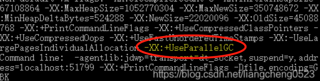
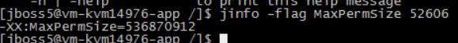
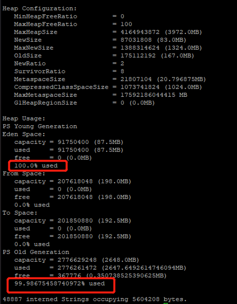

java 异常排查四板斧
参考：
- java堆栈常用排查指令
- java 查看堆内存_查看java内存情况的几个常用命令
- 【量产】如何查看正在运行中的JVM采用哪种GC算法策略
- Java中生成dump文件命令及分析工具下载
- 设置堆内存大小
- JVM：jmap heap 堆参数分析MinHeapFreeRatio、MaxHeapFreeRatio、MaxHeapSize、NewSize、MaxNewSize、
- 排查GC问题常用的工具
0 查找java项目进程pid
0.1 jps
显示当前所有java进程pid的命令。
缺点：只能显示当前用户的进程id，要显示其他用户的还只能用linux的ps命令。
- jps -l：输出应用程序main.class的完整package名或者应用程序jar文件完整路径名
- jps -v： 输出传递给JVM的参数
0.2 jps失效，linux提供的命令
ps -ef | grep javatop | grep java
1 查看java堆栈线程信息
说明：jstack命令打印指定Java进程、核心文件或远程调试服务器的Java线程的Java堆栈跟踪信息。
对于每个Java框架，完整的类名，方法名，字节码索引(BCI)和行号(如果有的话)会被打印出来。
使用-m选项，jstack命令打印程序中所有线程的Java和本机帧计数器(PC)。
看不懂：对于每个本机帧，当可用时，将打印离PC最近的本机符号。c++乱码的名字不会被修改。要demangle c++名称，输出这个命令可以管道到c++filt。
当指定的进程在64位Java虚拟机上运行时，可能需要指定-J-d64选项，例如:
jstack -J-d64 -m pid
2 查看java系统启动配置型
说明：jinfo命令打印指定Java进程或核心文件或远程调试服务器的Java配置信息。配置信息包括Java system属性和Java虚拟机(JVM)命令行标记。
如果指定的进程在64位JVM上运行，那么您可能需要指定-J-d64选项，例如:
jinfo-J-d64 -sysprops pid
查看gc算法：
jinfo -flags pid查看运行时的java进程的运行参数：
jinfo -flag MaxPermSize 52606修改运行时的java进程的运行参数...
2.1 启动时修改jvm配置
- -XX:NewRatio=4（默认是2）：修改新生代：老年代=1：4
- -XX:SurvivorRatio = 8：Eden区与From区、To区的默认占比为 8:1:1
- -Xms：用于表示堆区的起始内存，等价于 -xx:InitialHeapSize
- -Xmx：用于表示堆区的最大内存，等价于 -XX:MaxHeapSize
# 最大堆内存10m、初始化堆内存10m
java -Xmx10m -Xms10m -jar test.jar
3 查看java进程堆内存信息
jmap命令打印指定进程、核心文件或远程调试服务器的共享对象内存映射或堆内存详细信息。
如果指定的进程在64位上运行Java虚拟机(JVM)，那么您可能需要指定-J-d64选项， 例如:
jmap-J-d64 -heap pid。
堆Dump是反映堆使用情况的内存镜像，其中主要包括系统信息、虚拟机属性、完整的线程Dump、所有类和对象的状态等。
一般在：
- 内存不足，
- GC异常
等情况下，我们会去怀疑内存泄漏，这个时候就会去打印堆Dump。
3.1 常见用法
- jmap pid：打印的信息分别为：共享对象的起始地址、映射大小、共享对象路径的全程。
- jmap -heap pid：查看堆使用情况
- jmap -histo pid：查看堆中对象数量和大小，打印的信息分别是：序列号、Class实例的数量、内存的占用、类限定名
如果是内部类，类名的开头会加上*，如果加上live子参数的话，如jmap -histo：live pid，这个命名会触发一次FUll GC，只统计存活对象
jmap -heap pid：

其中堆配置的各个字段意思：
| 字段 | 意思 |
|---|---|
| MinHeapFreeRatio | 空闲堆空间的最小百分比，计算公式为：HeapFreeRatio =(CurrentFreeHeapSize/CurrentTotalHeapSize) * 100，值的区间为0到100，默认值为 40。如果HeapFreeRatio < MinHeapFreeRatio，则需要进行堆扩容，扩容的时机应该在每次垃圾回收之后。 |
| MaxHeapFreeRatio | 空闲堆空间的最大百分比，计算公式为：HeapFreeRatio =(CurrentFreeHeapSize/CurrentTotalHeapSize) * 100，值的区间为0到100，默认值为 70。如果HeapFreeRatio > MaxHeapFreeRatio，则需要进行堆缩容，缩容的时机应该在每次垃圾回收之后。 |
| MaxHeapSize | JVM 堆空间允许的最大值。 |
| NewSize | JVM 新生代堆空间的默认值。 |
| MaxNewSize | JVM 新生代堆空间允许的最大值。 |
| OldSize | JVM 老年代堆空间的默认值。 |
| NewRatio | 新生代（2个Survivor区和Eden区 ）与老年代（不包括永久区）的堆空间比值，表示新生代：老年代=1：2。 |
| SurvivorRatio | 两个Survivor区和Eden区的堆空间比值为 8，表示 S0 ： S1 ：Eden = 1：1：8。 |
| MetaspaceSize | 初始化元空间大小，控制发生GC |
| CompressedClassSpaceSize | |
| MaxMetaspaceSize | JVM 元空间允许的最大值。防止占用过多物理内存。 |
| G1HeapRegionSize | 在使用 G1 垃圾回收算法时，JVM 会将 Heap 空间分隔为若干个 Region，该参数用来指定每个 Region 空间的大小。 |
3.2 导出堆dump
手动生成堆dump文件：
jmap -dump:format=b,file=/home/dump.hprof pid
- live 只dump存活的对象，如果不加则会dump所有对象
- format=b 表示以二进制格式
- file=filepath 输出到某个文件中
但一般来说，在启动java程序时可以通过指定jvm参数来配置：当发生OOM异常时自动生成dump文件，参数配置如下：
java -XX:+HeapDumpOnOutOfMemoryError -XX:HeapDumpPath=/home/dump.hprof -jar test.jar
4 查看java虚拟机状态信息
jstat工具特别强大，可详细查看堆内各个部分的使用量，以及加载类的数量。
jstat -class pid:显示加载class的数量，及所占空间等信息。jstat -compiler pid:显示VM实时编译的数量等信息。jstat -gc pid:可以显示gc的信息，查看gc的次数，及时间。其中最后五项，分别是young gc的次数，young gc的时间，full gc的次数，full gc的时间，gc的总时间。jstat -gccapacity:可以显示，VM内存中三代(young,old,perm)对象的使用和占用大小，如：PGCMN显示的是最小perm的内存使用量，PGCMX显示的是perm的内存最大使用量，PGC是当前新生成的perm内存占用量，PC是但前perm内存占用量。其他的可以根据这个类推， OC是old内纯的占用量。jstat -gcnew pid:new对象的信息。jstat -gcnewcapacity pid:new对象的信息及其占用量。jstat -gcold pid:old对象的信息。jstat -gcoldcapacity pid:old对象的信息及其占用量。jstat -gcpermcapacity pid: perm对象的信息及其占用量。jstat -util pid:统计gc信息统计。jstat -printcompilation pid:当前VM执行的信息。
例1：
E:\javatest1\src\main\java\jvm>jstat -gc 4200
S0C S1C S0U S1U EC EU OC OU MC MU CCSC CCSU YGC YGCT FGC FGCT GCT
25600.0 25600.0 0.0 0.0 153600.0 12288.1 409600.0 0.0 4480.0 776.5 384.0 76.6 0 0.000 0 0.000 0.000
字段解释（单位是kB)：
S0C、S1C、S0U、S1U：Survivor 0/1区容量（Capacity）和使用量（Used）
EC、EU：Eden区容量和使用量
OC、OU：年老代容量和使用量
PC、PU：永久代容量和使用量
YGC、YGT：年轻代GC次数和GC耗时
FGC、FGCT：Full GC次数和Full GC耗时
GCT：GC总耗时
除了以上一个参数外，还可以同时加上 两个数字，如：jstat -printcompilation 3024 250 5是每250毫秒打印一次，一共打印5次，还可以加上-h3每三行显示一下标题：
[lushuan@220 tmp]$ sudo jstat -gcutil 16653 250 5
S0 S1 E O M CCS YGC YGCT FGC FGCT GCT
0.00 5.21 72.79 22.09 85.64 89.06 6551 118.995 2 0.123 119.118
0.00 5.21 72.97 22.09 85.64 89.06 6551 118.995 2 0.123 119.118
0.00 5.21 72.97 22.09 85.64 89.06 6551 118.995 2 0.123 119.118
0.00 5.21 72.97 22.09 85.64 89.06 6551 118.995 2 0.123 119.118
0.00 5.21 72.97 22.09 85.64 89.06 6551 118.995 2 0.123 119.118